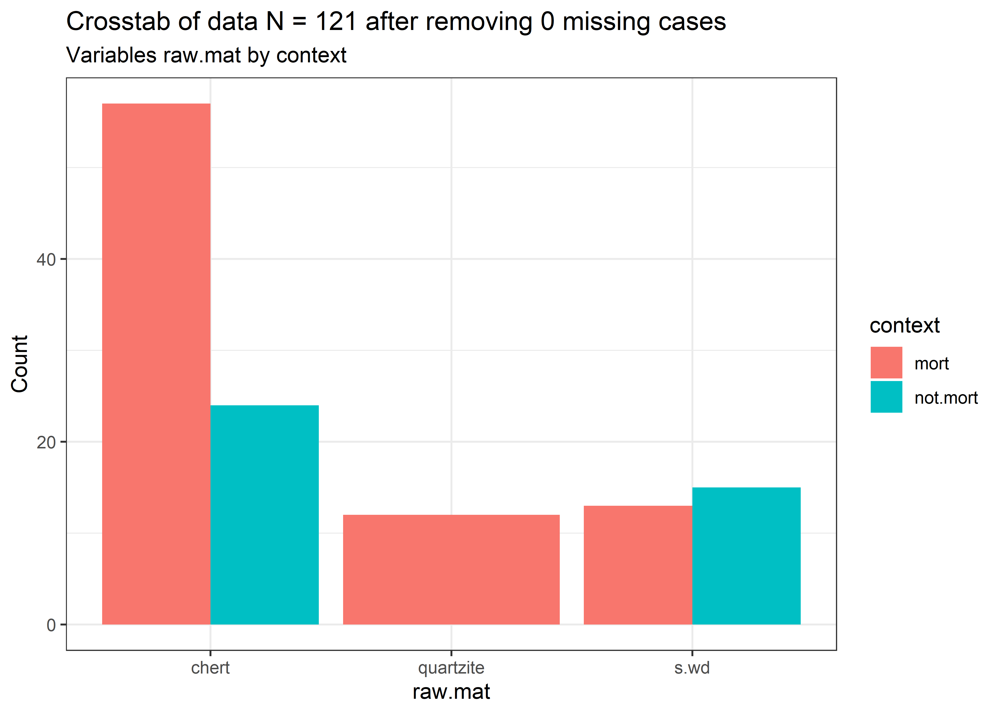
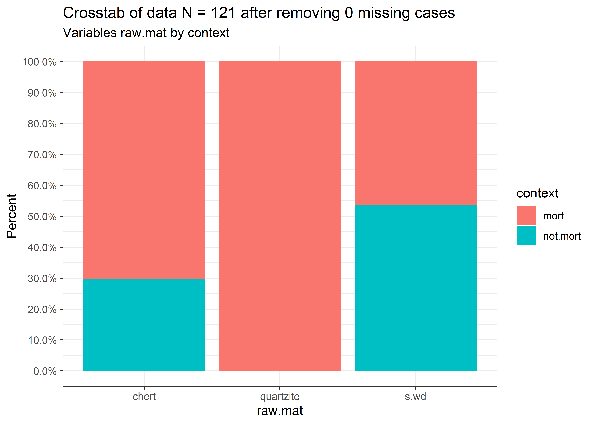
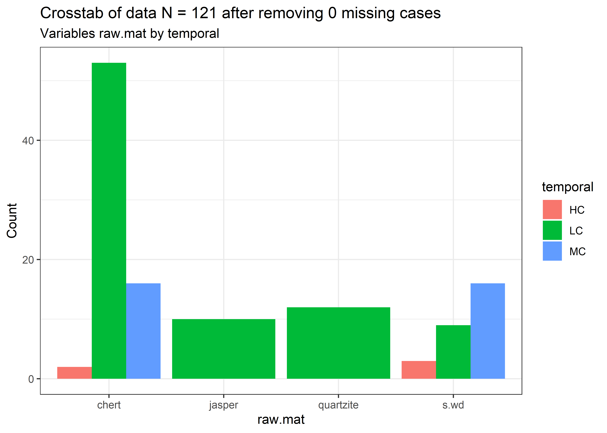
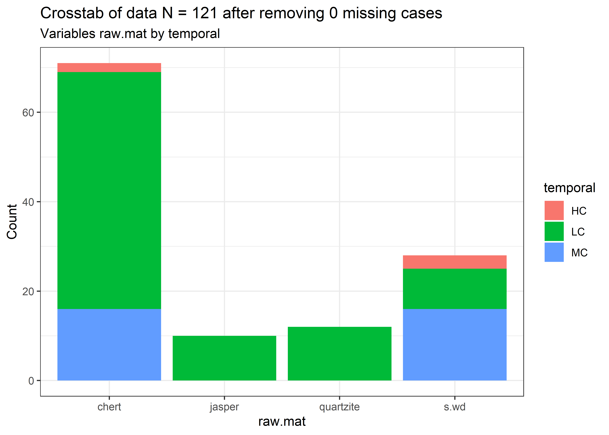
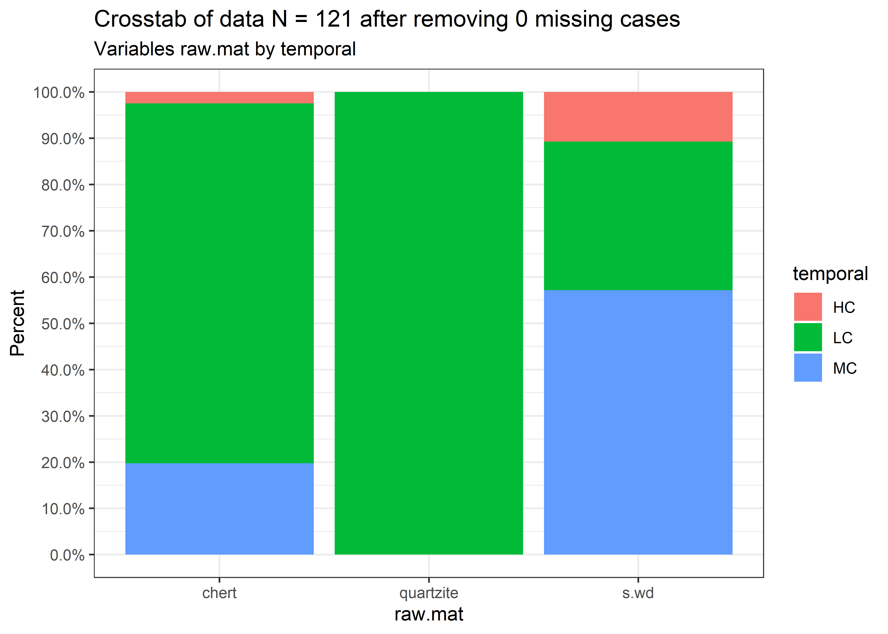
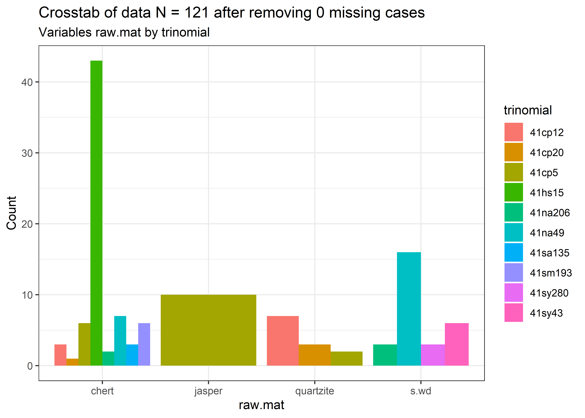
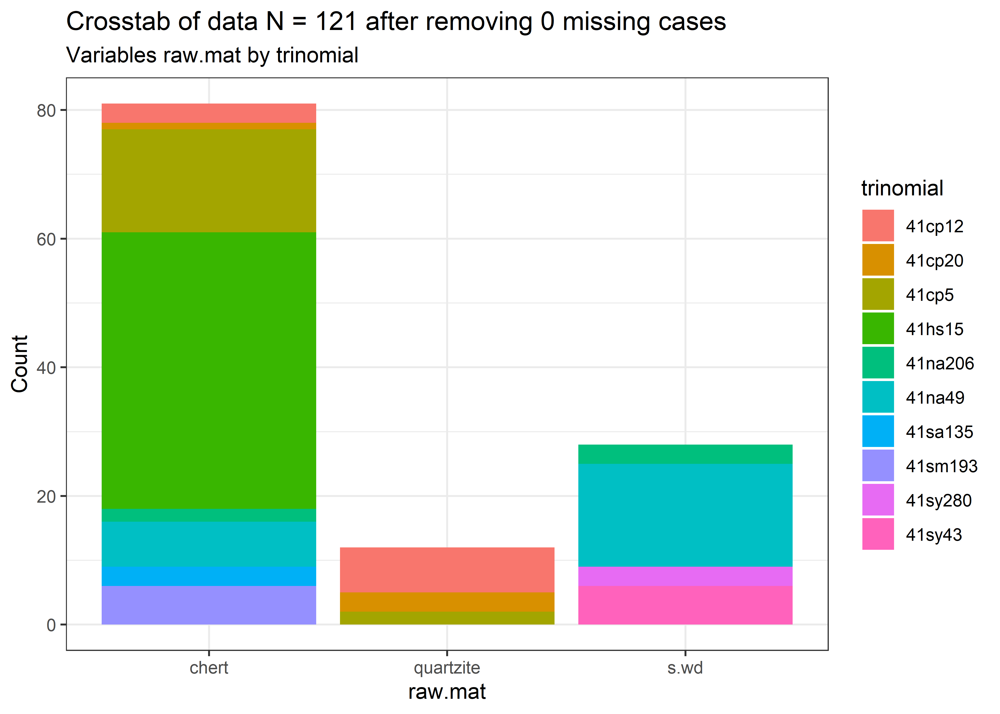
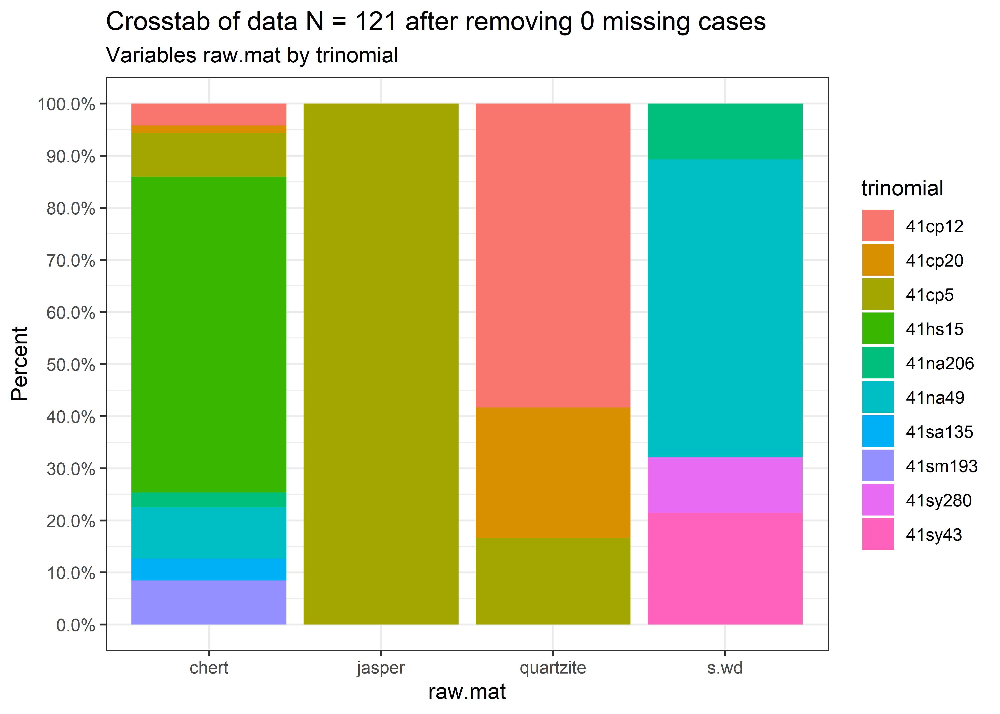

Chapter 4 Chi-squared
## Registered S3 method overwritten by 'DescTools':
## method from
## print.palette wesanderson## Registered S3 methods overwritten by 'lme4':
## method from
## cooks.distance.influence.merMod car
## influence.merMod car
## dfbeta.influence.merMod car
## dfbetas.influence.merMod carlibrary(lsr)
# read attribute data
data <- as.data.frame(read.csv("perdiz.csv", header = TRUE, as.is = TRUE))
# variables as factors
raw <- as.factor(data$raw.mat) # raw material
con <- as.factor(data$context) # burial context
temp <- as.factor(data$temporal) # temporal period
site <- as.factor(data$trinomial) # site4.1 Comparison of raw material by mortuary context
#####
## raw material by burial context
# tables
r.tab <- table(raw, con) # table of raw material by burial context
ftable(r.tab) # flat contingency table## con mort not.mort
## raw
## chert 57 24
## quartzite 12 0
## s.wd 13 15## Number of cases in table: 121
## Number of factors: 2
## Test for independence of all factors:
## Chisq = 11.796, df = 2, p-value = 0.002745
## Chi-squared approximation may be incorrect##
## Pearson's Chi-squared test with simulated p-value (based on 2000 replicates)
##
## data: r.tab
## X-squared = 11.796, df = NA, p-value = 0.002499## con
## raw mort not.mort
## chert 0.8714072 -0.8714072
## quartzite 2.5170708 -2.5170708
## s.wd -2.7559495 2.7559495sig <- .05 # significance level
# adjust for multiple testing with Bonferroni
sig.adj <- sig/(nrow(r.tab)*ncol(r.tab))
# z value
qnorm(sig.adj/2) # above Z in residuals = significant## [1] -2.638257## [1] 0.3122303## raw
## chert quartzite s.wd
## 81 12 28## con
## mort not.mort
## 82 39## con
## raw mort not.mort
## chert 0.47107438 0.19834711
## quartzite 0.09917355 0.00000000
## s.wd 0.10743802 0.12396694## con
## raw mort not.mort
## chert 0.7037037 0.2962963
## quartzite 1.0000000 0.0000000
## s.wd 0.4642857 0.5357143## con
## raw mort not.mort
## chert 0.6951220 0.6153846
## quartzite 0.1463415 0.0000000
## s.wd 0.1585366 0.3846154## Plotted dataset data variables context by raw.mat
## Plotted dataset data variables context by raw.mat
## Plotted dataset data variables context by raw.mat
4.2 Comparison of raw material by temporal period
#####
## raw material by temporal period
# tables
r.tab2 <- table(raw, temp) # table of raw material by temporal period
ftable(r.tab2) # flat contingency table## temp HC LC MC
## raw
## chert 2 63 16
## quartzite 0 12 0
## s.wd 3 9 16## Number of cases in table: 121
## Number of factors: 2
## Test for independence of all factors:
## Chisq = 26.532, df = 4, p-value = 2.472e-05
## Chi-squared approximation may be incorrect##
## Pearson's Chi-squared test with simulated p-value (based on 2000 replicates)
##
## data: r.tab2
## X-squared = 26.532, df = NA, p-value = 0.0004998## temp
## raw HC LC MC
## chert -1.3079580 2.8389881 -2.3754945
## quartzite -0.7577502 2.4223187 -2.1885176
## s.wd 1.9960116 -4.8835433 4.2008342sig <- .05 # significance level
# adjust for multiple testing with Bonferroni
sig.adj <- sig/(nrow(r.tab2)*ncol(r.tab2))
# z value
qnorm(sig.adj/2) # above Z in residuals = significant## [1] -2.772921## [1] 0.3311127## raw
## chert quartzite s.wd
## 81 12 28## temp
## HC LC MC
## 5 84 32## temp
## raw HC LC MC
## chert 0.01652893 0.52066116 0.13223140
## quartzite 0.00000000 0.09917355 0.00000000
## s.wd 0.02479339 0.07438017 0.13223140## temp
## raw HC LC MC
## chert 0.02469136 0.77777778 0.19753086
## quartzite 0.00000000 1.00000000 0.00000000
## s.wd 0.10714286 0.32142857 0.57142857## temp
## raw HC LC MC
## chert 0.4000000 0.7500000 0.5000000
## quartzite 0.0000000 0.1428571 0.0000000
## s.wd 0.6000000 0.1071429 0.5000000## Plotted dataset data variables temporal by raw.mat
## Plotted dataset data variables temporal by raw.mat
## Plotted dataset data variables temporal by raw.mat
4.3 Comparison of raw material by site
#####
## raw material by site
# tables
r.tab3 <- table(raw, site) #table of raw material by site
ftable(r.tab3) # flat contingency table## site 41cp12 41cp20 41cp5 41hs15 41na206 41na49 41sa135 41sm193 41sy280 41sy43
## raw
## chert 3 1 16 43 2 7 3 6 0 0
## quartzite 7 3 2 0 0 0 0 0 0 0
## s.wd 0 0 0 0 3 16 0 0 3 6## Number of cases in table: 121
## Number of factors: 2
## Test for independence of all factors:
## Chisq = 153.13, df = 18, p-value = 1.831e-23
## Chi-squared approximation may be incorrect##
## Pearson's Chi-squared test with simulated p-value (based on 2000 replicates)
##
## data: r.tab3
## X-squared = 153.13, df = NA, p-value = 0.0004998## site
## raw 41cp12 41cp20 41cp5 41hs15 41na206 41na49 41sa135 41sm193 41sy280
## chert -2.5927833 -1.8133987 2.1453256 5.7394080 -1.3079580 -4.1355848 1.2325365 1.7656592 -2.4958864
## quartzite 6.6368459 4.4287018 0.1836569 -2.7099232 -0.7577502 -1.7681575 -0.5819554 -0.8336750 -0.5819554
## s.wd -1.8116268 -1.1160080 -2.5231779 -4.4814355 1.9960116 5.8662120 -0.9623872 -1.3786592 3.1965004
## site
## raw 41sy43
## chert -3.5754598
## quartzite -0.8336750
## s.wd 4.5791181sig <- .05 # significance level
# adjust for multiple testing with Bonferroni
sig.adj <- sig/(nrow(r.tab3)*ncol(r.tab3))
# z value
qnorm(sig.adj/2) # above Z in residuals = significant## [1] -3.14398## [1] 0.7954608## raw
## chert quartzite s.wd
## 81 12 28## site
## 41cp12 41cp20 41cp5 41hs15 41na206 41na49 41sa135 41sm193 41sy280 41sy43
## 10 4 18 43 5 23 3 6 3 6## site
## raw 41cp12 41cp20 41cp5 41hs15 41na206 41na49 41sa135 41sm193 41sy280
## chert 0.024793388 0.008264463 0.132231405 0.355371901 0.016528926 0.057851240 0.024793388 0.049586777 0.000000000
## quartzite 0.057851240 0.024793388 0.016528926 0.000000000 0.000000000 0.000000000 0.000000000 0.000000000 0.000000000
## s.wd 0.000000000 0.000000000 0.000000000 0.000000000 0.024793388 0.132231405 0.000000000 0.000000000 0.024793388
## site
## raw 41sy43
## chert 0.000000000
## quartzite 0.000000000
## s.wd 0.049586777## site
## raw 41cp12 41cp20 41cp5 41hs15 41na206 41na49 41sa135 41sm193 41sy280
## chert 0.03703704 0.01234568 0.19753086 0.53086420 0.02469136 0.08641975 0.03703704 0.07407407 0.00000000
## quartzite 0.58333333 0.25000000 0.16666667 0.00000000 0.00000000 0.00000000 0.00000000 0.00000000 0.00000000
## s.wd 0.00000000 0.00000000 0.00000000 0.00000000 0.10714286 0.57142857 0.00000000 0.00000000 0.10714286
## site
## raw 41sy43
## chert 0.00000000
## quartzite 0.00000000
## s.wd 0.21428571## site
## raw 41cp12 41cp20 41cp5 41hs15 41na206 41na49 41sa135 41sm193 41sy280 41sy43
## chert 0.3000000 0.2500000 0.8888889 1.0000000 0.4000000 0.3043478 1.0000000 1.0000000 0.0000000 0.0000000
## quartzite 0.7000000 0.7500000 0.1111111 0.0000000 0.0000000 0.0000000 0.0000000 0.0000000 0.0000000 0.0000000
## s.wd 0.0000000 0.0000000 0.0000000 0.0000000 0.6000000 0.6956522 0.0000000 0.0000000 1.0000000 1.0000000## Plotted dataset data variables trinomial by raw.mat
## Plotted dataset data variables trinomial by raw.mat
## Plotted dataset data variables trinomial by raw.mat